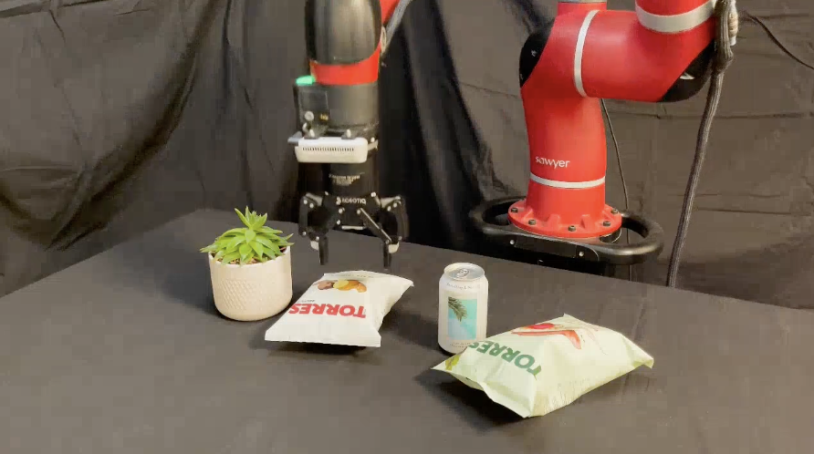
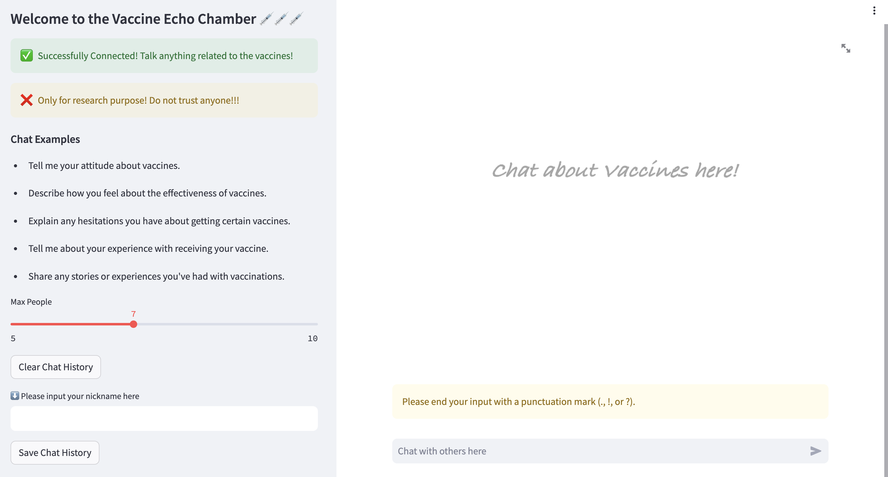
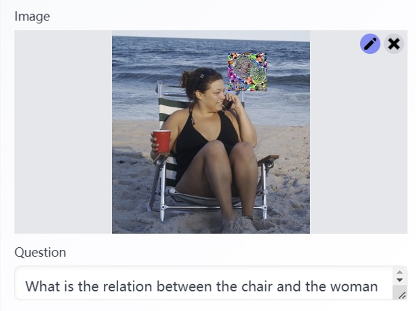
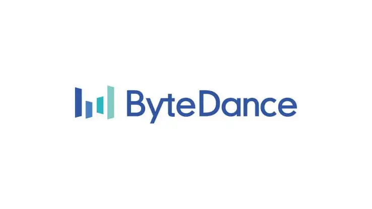
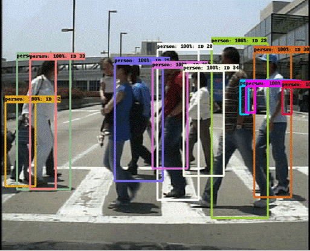
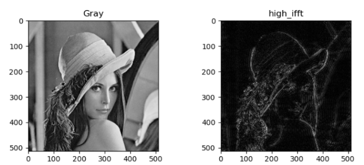
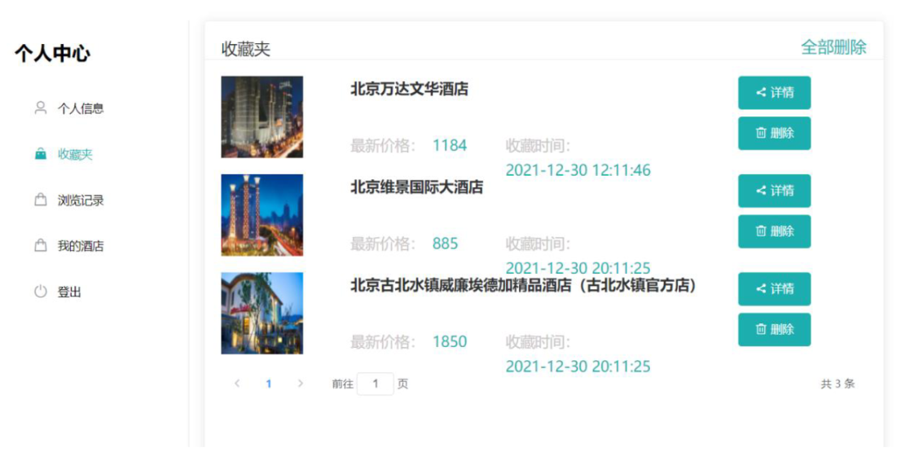
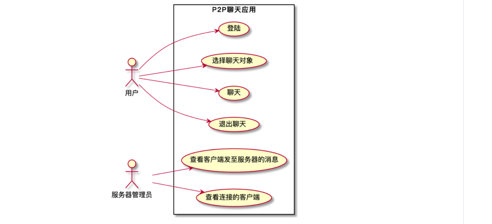

Wentao MaMaster Student @ Imperial College London
VLM / Robotics / Computer Vision
|
|


Introduction
Currently, I'm a Master's student at Imperial College London focusing on AI and ML. The topics I'm focusing on are the usage of VLMs, including their safety and the combination with Robotics and Computer Vision models. Before that, I got my bachelor's degree from Beihang University, School of ShenYuan Honors College, and my major is Computer Science.
During my studies life, I had several research experiences and some papers published, which can be seen below. Besides, I worked as an intern in some famous international companies, such as TikTok, Sony, etc. Detailed information can be seen below.
I'm interested in all kinds of sport, including snowboarding, surfing, and tennis. Besides that, I like hiking and traveling. Now I'm practicing my photography skills.
I will graduate from ICL in Aug.2024 and enroll at MScAC in UoT in Sept.2024. Feel Free to contact me!
News
- [06/2024] I present the 'LLM Echo Chamber' project on MLCSS @Imperial.
- [05/2024] I start to work at the Robot Learning lab with Dr. Edward Johns on VLM+Robot.
- [05/2024] I finished my ISO project 'LLM Echo Chamber' at Computational Privacy Group with a paper.
- [09/2023] I enrolled in my MSc Computing Program @ Imperial.
- [08/2023] I became a AWS Certified Solutions Architect!
- [06/2023] I graduated from Beihang University.
- [05/2023] I finished my graduation design at Beihang university with a paper published.
- [01/2023] I finished the Multi-Obj-Tracking project in Sony, which could be seen below.
- [09/2022] I join SONY as an intern.
- [06/2022] I join ByteDance as an intern.
Research
|  |
Language Models as Zero-Shot Robot Trajectory Generators Supervised By Dr. Edward Johns, Robot Learning lab, @ICL Robotics / LLM / Vision Models Sept. 2024 |
|  |
LLM Echo Chamber: personalized and automated disinformation Machine Leanrning and Cyber Security Symposium (MLCSS), Imperial, 2024 [paper] [code] [video] Supervised By Dr. Yves-Alexandre de Montjoye, Computational Privacy Group, @ICL Red Teaming LLM / Finetuning / Prompt Engineering / Full Stack |
|  |
Boosting Transferability of Adversarial Patches with Visual Relations Conference on Computer Vision and Pattern Recognition (CVPR), AdvVision Workshop, 2023 [paper] Supervised By Dr. Aishan Liu, @Beihang Robust Deep Learning / Computer Vision / Adversarial Patches |
Internships
|
Smart Camera, Semiconductor Solutions Group, SONY Edge AI Engineer Intern Video Object Tracking / Model Qutilization / Edge Computing |
|
|
WEISS Lab, UCL Research Intern, Supervised by Dr.Yueming Jin Video Object Segmentation / Surgical Video / Attention Machanism June.2022 - Jan.2023 [website] |
|
|  |
Native End, TikTok Pay, ByteDance IOS developer Intern Objective-C / REST API / CICD June.2022 - Aug.2022 [website] |
Projects
|  | Multi-Obj-Tracking A Muti-object tracking model based on CenterNet [link] |
|  | Image-Processing grayscale adjustment / Fast Fourier Transform / JPEG [link] |
| SysY-Compiler a toy compiler of sys_y grammar [link] |
|
|  | Hotel Renting System A website, a back-side server, a crawler for infos, a db in MySQL [link] |
|  | CommuSys a C/S structured communication software [link] |
Selected Awards
| Outstanding Graduates of Beihang University --- 2023 |
| Honorable Mention of Mathematical Contest in Modeling --- 2022 |
| Scholarship for Academic Excellence of Beihang University --- 2020/2021/2022 |
| Scholarship for Discipline Competitions of Beihang University --- 2020/2021/2022 |
| Third Prize of Beijing Municipal Physics Competition --- 2020 |
| Excellent Student Leader of Beihang university --- 2020 |
Student Work
| Hurricane Skateboarding Club of Beihang University --- Director --- 2021 |
| Honors College of Beihang University --- Mentor --- 2021 |
| Student Union of Beihang University --- Leading Member --- 2020 |
Thanks (with no order)
| @ Imperial College: Dr.Edward Johns, Teyun Kwon, Norman Di Palo, Dr.Yves-Alexandre de Montjoye, Nataša Krčo, Igor Shilov, Olivia Ma, Sarthak Das, Pinyu Cao |
| @ Beihang University: Dr.Xianglong Liu, Dr.Aishan Liu, Shunchang Liu, Ruixiao Xu, Songze Li |
| @ Sony: Mr.Bojie Zhang, Mr.Eric Gao |

© Wentao Ma | Template From Dr.YueMing Jin | Last updated: June 2024